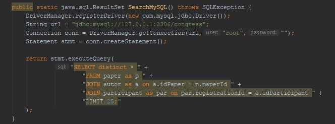
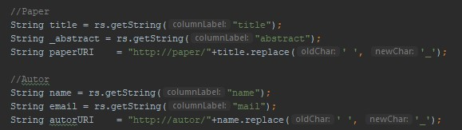
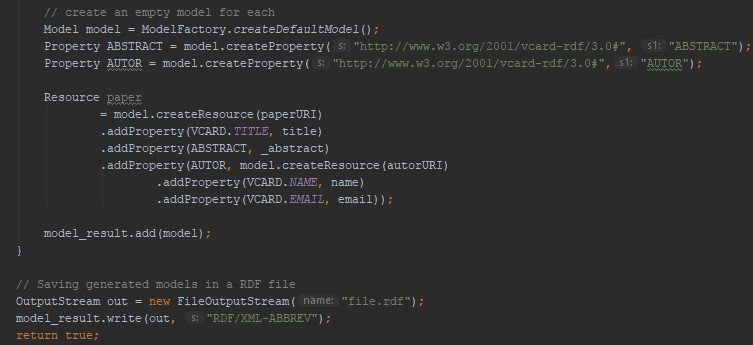
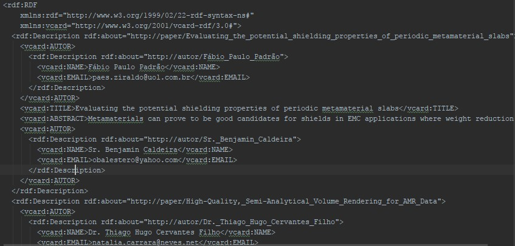
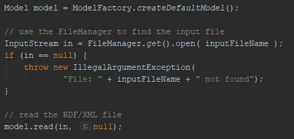
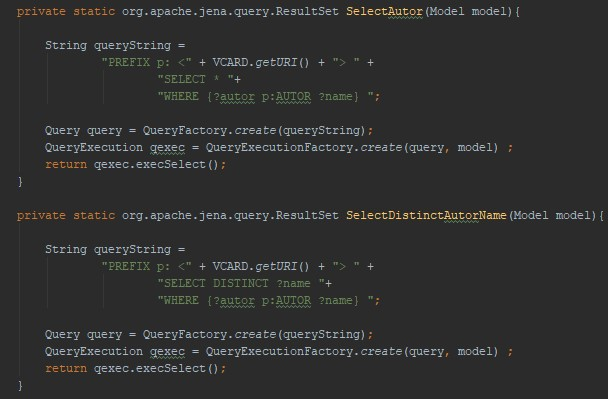

Dados Semiestruturados com RDF e SPARQL
Para transformar os dados do sistema de congressos em dados semiestruturados foi utilizado a estrutura RDF(Resource Description Framework), que possui uma sintaxe baseada em XML sendo uma linguagem mínima para a representação de Ontologias simples. O RDF possui o conceito de tripla formada por sujeito(recurso), predicado(propriedade) e objeto(literal).
Para tranformar os dados do projeto em semiestruturados foi necessário primeiro criar um metodo que busca-se os mesmos do banco de dados relacional MySQL.

Figura 1. Código do método SearchMySQL que retorna a junção de paper, autor e participant.
Com os dados relacional foram criados os atributos de paper e autor.

Figura 2.Código usado pra criar atributos apartir do SQL.
Depois foi criado um modelo RDF assim como as propriedades AUTOR e ABSTRACT, que não existiam na VCARD(onde ficam as propriedades predefinidas da biblioteca) e criado um a tripla utilizando paper como sujeito. Por fim, esse modelo foi adicionado à uma lista de modelos que foram salvos como um arquivo RDF.

Figura 3.Código para criação de tripla e salvar arquivo RDF.

Figura 4.Parte do arquivo RDF gerado.
O passo seguinte foi ler o arquivo gerado e carregar o modelo RDF.

Figura 5.Código para ler o arquivo e carregar dados.
Tendo os dados no formato RDF, é utilizado a linguagem SPARQL(Protocol and RDF Query Language) para realizar consultas fazendo o uso também do conceito de tripla.
Com o modelo RDF carregado foi a vez de realizar as consultas SPARQL. A primeira consulta é uma query simples onde é feito um select buscando todos os dados por autor e uma segunda query em que é feito um distinct.

Figura 6.Código das query utilizadas.
Todos os códigos utilizados nesta atividade estão disponíveis no GitHub através do repositório: https://github.com/Felipeandradee/tebd-rdf-exercise.git.